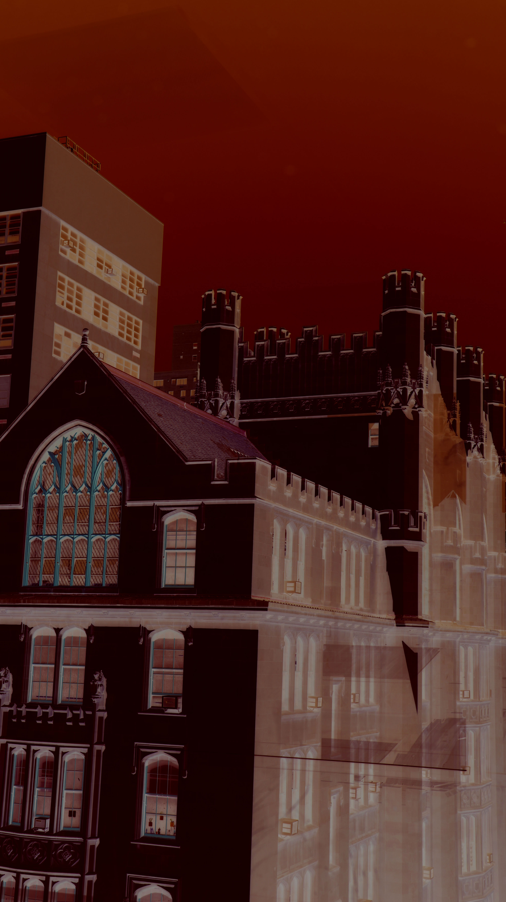

The image you see here is the image of Hunter College's Thomas Hunter Building. I took this image because, since I was a freshman, I always liked the older architecture style of Thomas Hunter Hall, and I wanted to capture that through my photography. I changed the image by editing the saturation to 9, changing the lightness to 9, and the vibrance to 61. I also played with the curves and levels to give the image an old, gothic, horror aesthetic:
